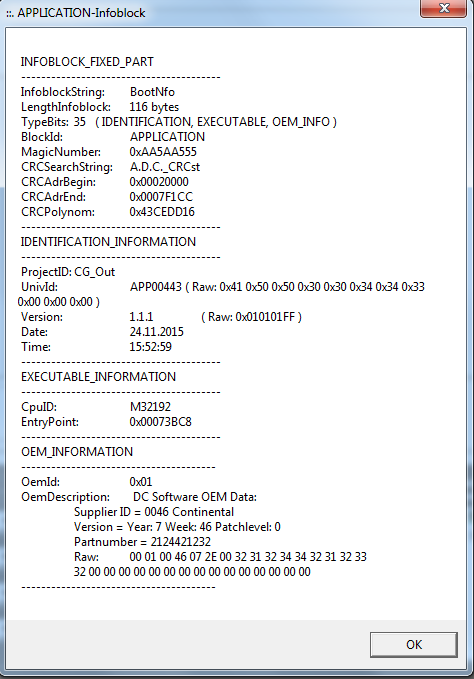

Ab Fr 28.10.2016 09:46:
VPU2:

VPU4:

mit D:\RTAS_work\vpu4_cg_iqf_tag_ver-1.1.1\platform_sw\vpu4\codegen\nvm\nvm_production_Passat_IQFOutOff.mot
Bis Fr 28.10.2016 09:41 war aufgespielt:
VPU2:

VPU4:

Do 05.11.2015 17:00
VPU2 APP00441 05.11.2015 15:30:30
VPU4 APP00398 28.09.2015 17:35:17
Mo 02.11.2015 10:54
VPU2 APP00427 31.07.2015 13:34:47
VPU4 APP00398 28.09.2015 17:35:17
bis dahin:
VPU2 APP00401 09.02.2015 10:28:01
VPU4 APP00379 16.02.2015 11:18:31